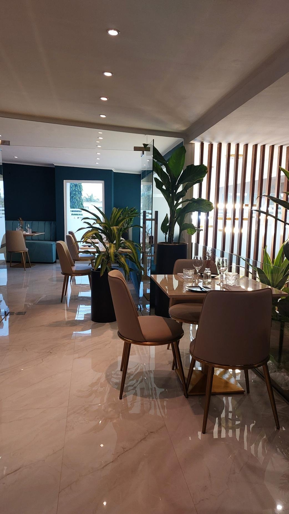
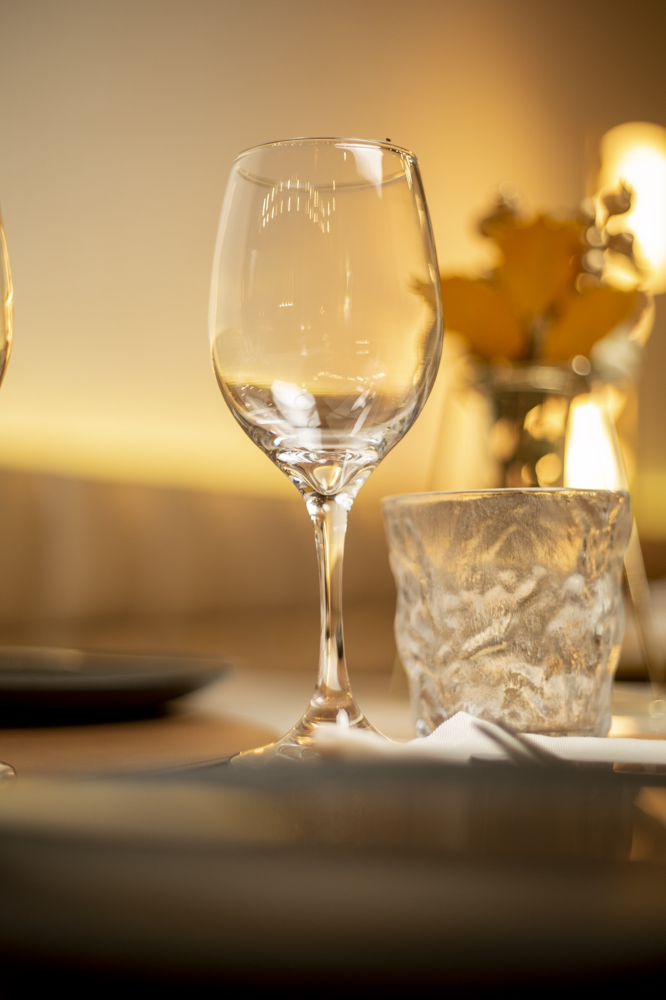

Pátio Luanda
Boa comida.
Grandes encontros.
Um lugar para chegar, ficar e deixar Luanda à porta. A mesa, o espaço e o tempo no mesmo gesto.
O conceito
Mais do que um restaurante.
Um lugar para estar.
Há mais de uma década, o Pátio nasceu no sul de Luanda para reunir o que a cidade pede: boa mesa, tempo e um sítio onde os encontros se prolongam. Do Morro Bento ao centro da cidade, a forma de receber é a mesma.
A nossa história
Os nossos espaços
Cada espaço tem a sua alma.
Morro Bento, Mutamba, Roots, Pastelaria e Aeroporto. Cinco formas de viver a mesma hospitalidade.


Gastronomia
Sabores pensados para ficar.
Carnes, o mar, sushi no Roots, sobremesas e uma carta de bebidas para acompanhar a conversa.
Eventos
Há encontros que merecem o cenário certo.
Corporativos, casamentos, aniversários, formações e jantares privados. Do primeiro contacto ao último detalhe.

Testemunhos